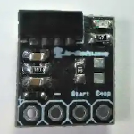
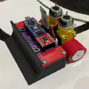
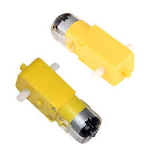
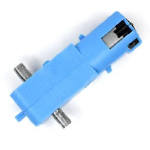

Reglamento del campeonato de sumo RC amateur
De la misma manera que en las artes marciales japonesas tradicionales, los robots intentan empujar al competidor fuera del dohyō.
MUY IMPORTANTE
El uso de activadores para todas las categorías autónomas es obligatorio; el modelo de receptor a utilizar será el de RobotChallenge Rumania o similares, como es de la marca JA-BOTS, esto con el fin de evitar interferencias al momento de realizar la activación de los robots.

DEFINICIÓN DEL COMBATE DE SUMO
Equipo conformado por 2 integrantes. Un partido se pelea entre dos equipos; cada equipo tiene uno o más contendientes. Únicamente 2 miembros del equipo pueden encontrarse en el área de combate cumpliendo función de Operador - Asistente, siendo el Operador el único que controle al robot. Otros miembros del equipo (apoyo) deben mirar desde la audiencia. De acuerdo con las reglas del juego (en lo sucesivo, “estas reglas”), cada equipo compite en un Dohyo (Dohyo de sumo) con un robot que ellos mismos han adquirido, modificado o construido según las especificaciones de los “Requisitos para los robots”. El partido comienza a la orden del juez y continúa hasta que un concursante gana dos puntos Yuko. El juez determina al ganador del partido.
REQUISITOS PARA LOS ROBOTS DE LA CATEGORÍA AMATEUR
Especificaciones generales del robot
Las siguientes son especificaciones para todos los robots. El robot debe construirse con motores con caja amarilla o azul plástica sin modificaciones internas o externas; se acepta el uso de pesos metálicos, más no elementos que tengan filo que puedan atentar contra la seguridad de los participantes (cuchillas o navajas). La medida del robot para sumo en la categoría amateur es de 10 cm x 10 cm, sin un límite de altura, y su peso no debe ser superior a los 500 gr. El robot debe caber dentro de un cubo cuadrado de las dimensiones apropiadas para cada clase, asumiendo el 1% de tolerancia de la medida. El robot puede expandirse en tamaño después de que comience un encuentro, pero no debe separarse físicamente en pedazos y debe permanecer como un solo robot centralizado. Los pies del robot no deben ampliarse durante el encuentro. Los robots que violen estas restricciones serán descalificados. Los tornillos, tuercas y otras partes del robot con una masa total de menos de 5 gr. que se caigan del cuerpo de un robot no deben causar la pérdida del round. Los robots que usan navajas o cuchillas finas las cuales puedan romperse durante un encuentro, solo en el caso de que la cuchilla se rompe durante el encuentro, el participante dispondrá de 3 min para cambiar o retirar la cuchilla; si la cuchilla se encuentra rota al inicio del round, el robot pierde inmediatamente ese encuentro. Todos los robots deben ser autónomos; puede emplearse cualquier mecanismo de control, siempre que todos los componentes estén contenidos dentro del robot y el mecanismo no interactúe con un sistema de control externo (humano, máquina u otro). El robot obtiene un número para fines de registro. Muestre este número en su robot para permitir que los espectadores y oficiales identifiquen su robot. Este número se colocará donde el participante considere pertinente.

| Motor Amarillo | Motor Azul |
|---|---|
|  |  |
RESTRICCIONES DE ROBOTS
Dispositivos de interferencia, como luces estroboscópicas, luz tipo flash, etc. Destinados a saturar los sensores IR de los oponentes, no están permitidos. No se permiten piezas que puedan romper o dañar el Dohyo. No utilice piezas que están destinadas a dañar el robot del oponente o su operador. Los empujones y golpes normales no se consideran intención de dañar. Dispositivos que pueden almacenar líquido, polvo, gas u otras sustancias para arrojar al oponente no están permitidos. No se permiten dispositivos con llamas. No se permiten dispositivos que arrojen cosas a tu oponente. No se permiten sustancias pegajosas para mejorar la tracción. Los neumáticos y otros componentes del robot en contacto con el Dohyo no deben poder levantar y sostener un papel A4 estándar (80 g/m2) durante más de cinco segundos. Los dispositivos para aumentar la fuerza descendente, como bombas de vacío e imanes, no están permitidos. Todos los bordes, incluidos, entre otros, la pala frontal, no deben estar lo suficientemente afilados como para rayar o dañar el ring, otros robots o jugadores.
REQUISITOS PARA EL DOHYO (SUMO)
Interior de Dohyo
El interior del Dohyo se define como la superficie de juego rodeada e incluyendo la línea fronteriza. Cualquier lugar fuera de esta área se llama exterior del Dohyo.
Especificaciones de Dohyo
El Dohyo deberá ser de forma circular y de las dimensiones exactas. La línea del borde está marcada como un Dohyo circular blanco mate de un ancho apropiado para la clase dada en el borde exterior de la superficie de juego. El área del Dohyo se extiende hasta el borde exterior de esta línea circular. Para todas las dimensiones dadas del Dohyo se aplica una tolerancia del 5%. Líneas de inicio (Shikiri-Sen) color café tendrán una longitud de 100 mm o, en su defecto, se puede utilizar otro elemento que simule las mismas que se deben retirar antes de iniciar el partido. La superficie del Dohyo debe ser lisa, pintada o de vinil de colores negro y blanco mate.

Exterior de Dohyo
Debe haber un espacio apropiado para cada clase de sumo fuera del borde exterior del ring. Este espacio puede ser de cualquier color excepto blanco ni retroreflectivo, y debe de ser material blando de cualquier forma siempre y cuando no se violen los conceptos básicos de estas reglas. Esta área, con el Dohyo en el medio, se denominará “área del Dohyo”. Cualquier marca o parte de la plataforma del ring fuera de las dimensiones mínimas también se considerará en el área del ring. ## DINÁMICA DEL PARTIDO DE SUMO Un partido consta de 3 rondas, cada una de 2 minutos máximo. El equipo que gana dos rondas o recibe dos puntos “Yuko” primero, dentro del límite de tiempo, deberá ganar el partido. Un equipo recibe un punto “Yuko” cuando gana una ronda. Si alcanza el límite de tiempo antes de que un equipo pueda obtener dos puntos “Yuko”, y uno de los equipos ha recibido un punto Yuko, el equipo con un punto Yuko ganará. Cuando en las 3 rondas no se ha ganado por ninguno de los equipos dentro del límite de tiempo, se podrá disputar una ronda adicional, durante la cual ganará el equipo que reciba el primer punto Yuko. Alternativamente, el ganador/perdedor del partido puede ser decidido por los jueces, por sorteo o por revancha. Se otorgará un punto Yuko al ganador cuando se solicite la decisión de los jueces o se empleen sorteos.
CURSO DE LA COMPETICIÓN
¡¡¡Importante!!! Una persona puede ser operador de un máximo de 2 robots.
Los robots se dividirán en grupos según el número de participantes. La competencia se llevará a cabo en un sistema de grupos/cuartos/semifinales/finales para permitir tantas rondas de juego para cada robot. Cada partido se juega al mejor de 3 rondas y será supervisado por 2 árbitros (uno principal y un asistente), excepto las finales, donde el partido se disputa en el sistema de eliminación directa. Si dos robots de un mismo equipo avanzan a cuartos/semifinales/finales y jugarán uno contra el otro, deberán jugar el partido, sin exigir que uno de ellos avance sin jugar, ni exigir que se arreglen los partidos o los opositores. El orden de los robots en los grupos será aleatorio, se hará después de la apertura oficial de la competencia y estará disponible en el sitio web para todos los participantes. Los que superen los grupos jugarán cuartos/semifinales/final. Si el número de participantes no fuera suficiente para los grupos, la competición se jugará desde el principio utilizando el sistema todos contra todos. La posición será aleatoria. Un equipo tiene derecho a 2 interrupciones de reprogramación, de 2 minutos cada una. Esta regla se aplica solo durante un partido en curso. Además de los partidos, se permiten los cambios y reprogramaciones. Los equipos deben estar en el inicio en un máximo de 1 minuto desde la solicitud; de lo contrario, perderán el partido. No existirá mesa de retención de robots; todos los equipos permanecerán en la sala reservada para ellos (la sala estará marcada en el mapa como área de pits). Los equipos pueden salir de la sala solo cuando son llamados al área de competencia. Cada equipo será llamado por un oficial de competencia cuando necesite ir a la sala de espera que se encuentra cerca del área de competencia. Solo existirá mesa de homologación. Después de la homologación, los equipos que seguirán en la salida permanecerán en el área de competición, en la zona de espera. Los equipos saldrán de esta área solo si el árbitro está de acuerdo, o solo para reparaciones, y deben regresar en el tiempo establecido por el árbitro. Si el equipo no regresa a la primera llamada, perderá el partido. Terminado un partido, los equipos deben regresar a la sala reservada para ellos. Cada equipo tiene la responsabilidad de seguir la parrilla de salida (horario), que se muestra en el sitio web y en el espacio del equipo.
INICIAR, DETENER, REANUDAR, FINALIZAR UNA PARTIDA
Colocación de robots Siguiendo las instrucciones del juez, los dos equipos se acercan al ring para colocar sus robots en el ring. Los operadores colocarán los robots al mismo tiempo en el ring. El juez dará la señal. Después de la colocación, los robots ya no se pueden mover. Cualquier parte de los robots debe colocarse detrás del Shikiri-Sen (líneas de observación). El robot no cruzará la línea de salida hacia el oponente. El robot debe colocarse sobre y dentro de las líneas extendidas verticalmente desde ambos bordes de Shikiri-Sen (línea de inicio).
COMIENZO DE LA CONTIENDA
El juez anuncia el comienzo de la ronda. Los equipos comienzan sus robots; no existe tiempo de seguridad, los robots pueden empezar a funcionar inmediatamente. Después de la señal de encendido, los jugadores deben salir del área del ring.
DETENER, REANUDAR
El partido se detiene y se reanuda cuando un juez lo anuncia.
FIN
El partido termina cuando el juez lo anuncia. Los dos equipos recuperan los robots del área del ring.
PUNTUACIÓN
Puntuación para robots: se otorgará un punto Yuko cuando: Un equipo obliga legalmente al cuerpo del robot contrario a tocar el espacio exterior. el Dohyo, que incluye el lado lateral del Dohyo en sí mismo. El robot oponente ha tocado el espacio fuera del ring por sí solo. Cualquiera de las anteriores tiene lugar al mismo tiempo que finaliza el partido anunciado. Cuando un robot con ruedas ha volado y ha caído sobre el ring o en condiciones similares, Yuko no se contará y el partido continúa.
DECISIÓN POR CRITERIO DE LOS JUECES
Cuando se requiera la decisión de los jueces para decidir el ganador, se tendrán en cuenta los siguientes puntos, tomados en consideración: Méritos técnicos en el movimiento y funcionamiento de un robot. Puntos de penalización durante el partido Actitud de los jugadores durante el partido.
REVANCHA
Los robots están enredados u orbitando entre sí sin progreso perceptible durante 5 segundos. Si no está claro si se está progresando o no, el juez puede extender el límite de tiempo para el progreso observable hasta 30 segundos. Ambos robots se mueven, sin avanzar, o se detienen (exactamente al mismo tiempo) y permanecen parados durante 5 segundos sin tocarse. Sin embargo, si un robot detiene su movimiento primero, después de 5 segundos se declarará que no tiene voluntad para luchar. En este caso, el oponente recibirá un Yuko, incluso si el oponente también se detiene. Si ambos robots se están moviendo y no está claro si se está progresando o no, el juez puede extender el límite de tiempo hasta 30 segundos. Si ambos robots tocan el exterior del Dohyo aproximadamente al mismo tiempo, y no puede determinarse quién tocó primero, se convoca una revancha.
SOLICITUD PARA DETENER EL PARTIDO
Un jugador puede solicitar detener el juego cuando está lesionado o su robot tuvo un accidente y el juego no puede continuar.
NO SE PUEDE CONTINUAR EL PARTIDO
Cuando el juego no puede continuar debido a una lesión del jugador o un accidente del robot, el jugador que es la causa de dicha lesión o accidente pierde el partido. Cuando no esté claro qué equipo es la causa, el equipo que no puede continuar el juego, o que solicita detener el juego, será declarado perdedor.
DETERMINACIÓN DEL GANADOR
El robot con más puntos será determinado como el ganador del partido. En caso de empate en la puntuación final, el juez votará por el ganador según la táctica, la agresividad y la actividad. Si ninguno de los robots anotó un punto, el juez puede decidir que no hay ganador del partido.
DECLARACIÓN DE OBJECIONES
No se declararán objeciones contra las decisiones de los jueces. La persona líder de un equipo puede presentar objeciones al Comité, antes de que finalice el partido, si existen dudas en el ejercicio de estas reglas. Si no hay miembros del Comité presentes, la objeción se puede presentar al juez. antes de que termine el partido.
JUECES
La figura del juez o los jueces es importante en la competencia; él será el encargado de que las reglas y normas establecidas sean cumplidas. Los jueces para esta competencia serán designados por el comité organizador. Los participantes pueden presentar sus objeciones al juez encargado de la categoría antes de que acabe la competencia. En caso de duda en la aplicación de las normas, el juez se regirá por el reglamento establecido haciéndolo cumplir.
TRANSITORIOS:
De no contar con un mínimo de 4 robots o equipos participantes, la categoría será considerada únicamente como exhibición. Todos aquellos sucesos que no se contemplen dentro del presente reglamento, durante la competencia, serán resueltos por el Comité Organizador en conjunto con los jueces, sin derecho de apelación. Una vez realizada la inscripción del robot, no se realizarán devoluciones de dinero. Los distintivos de cada participante serán entregados durante el desarrollo del evento. El cronograma oficial se dará a conocer unos días antes de la competencia, el cual podrá variar en base a los imprevistos.
INSCRIBA SU ROBOT DE SUMO RC AQUÍ